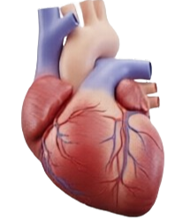
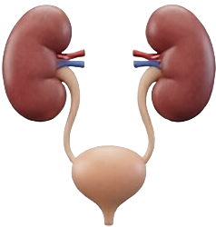
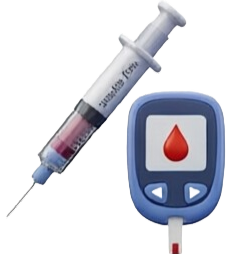
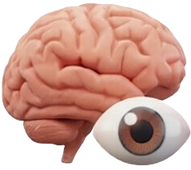
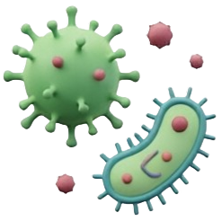
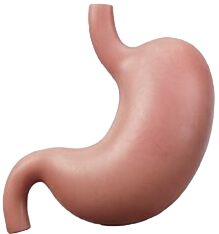
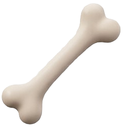
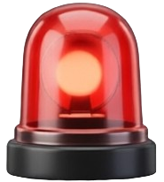

Cas cliniques de cardiologie

Pathologies urologiques et rénales

Pathologies métaboliques et hormonales

Maladies des organes des sens
Pathologies du système nerveux et du psychisme
Santé de la femme et périnatalité

Infections, pathogènes et maladies infectieuses

Pathologies de l'appareil digestif

Pathologies de l'appareil locomoteur

Cas dynamiques, temps limité, gestion active.